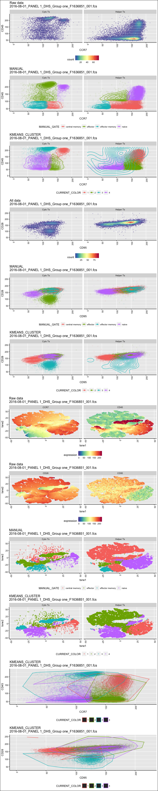
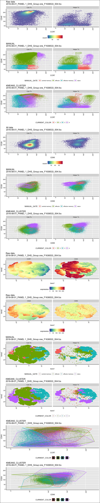

## [1] "Found 37 wsps"## [1] "/Volumes/Beta/data/flow/wsp//801_Panel 1_DHS.wsp"
## [1] "2016-08-01_PANEL 1_DHS_Group one_F1636851_001.fcs"
## windows version of flowJo workspace recognized.
## version X
## [1] "2016-08-01_PANEL 1_DHS_Group one_F1636851_001.fcs"
##
## FALSE TRUE
## 175192 28587
## Running FlowSOM... Building SOM...
## Meta clustering to 4 clusters...## DONE!
## [1] "loading /Volumes/Beta/data/flow/testTcellSubFCS_Results/2016-08-01_PANEL 1_DHS_Group one_F1636851_001.fcsresults.RData for re-clustering"
## [1] "loading /Volumes/Beta/data/flow/testTcellSubFCS_Results/2016-08-01_PANEL 1_DHS_Group one_F1636851_001.fcsresults.RData for re-clustering"
## [1] "Plotting 2016-08-01_PANEL 1_DHS_Group one_F1636851_001.fcs"
## [1] "EC_ZF example = TRUE"
## [1] "Sample number 0"## [1] "/Volumes/Beta/data/flow/wsp//801_Panel 1_DHS.wsp"
## [1] "2016-08-01_PANEL 1_DHS_Group one_F1636533_004.fcs"
## windows version of flowJo workspace recognized.
## version X
## [1] "2016-08-01_PANEL 1_DHS_Group one_F1636533_004.fcs"
##
## FALSE TRUE
## 945246 61817
## Running FlowSOM... Building SOM...
## Meta clustering to 4 clusters...
## DONE!
## [1] "loading /Volumes/Beta/data/flow/testTcellSubFCS_Results/2016-08-01_PANEL 1_DHS_Group one_F1636533_004.fcsresults.RData for re-clustering"
## [1] "loading /Volumes/Beta/data/flow/testTcellSubFCS_Results/2016-08-01_PANEL 1_DHS_Group one_F1636533_004.fcsresults.RData for re-clustering"
## [1] "Plotting 2016-08-01_PANEL 1_DHS_Group one_F1636533_004.fcs"
## [1] "EC_ZF example = TRUE"
## [1] "Sample number 1"